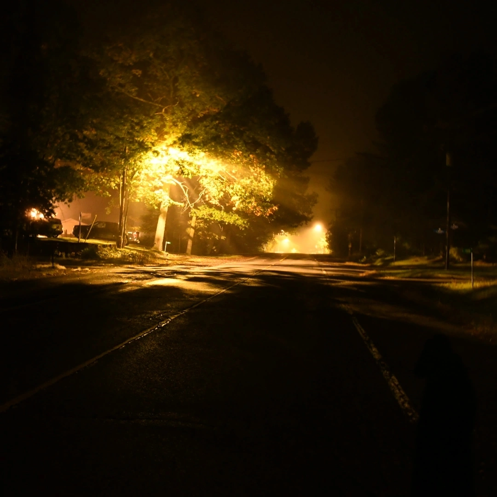

About Overgrown Audio
Exploring the sounds of the underground

Behind the Roots
Hallo, I'm Ben! I'm a passionate music enthusiast and critic with a deep love for underground and experimental sounds.
I started this site to share my passion for discovering and reviewing unique musical talents that often go unnoticed in mainstream media.
I focus on reviewing music that pushes boundaries and challenges conventional norms, bringing attention to artists who deserve recognition.